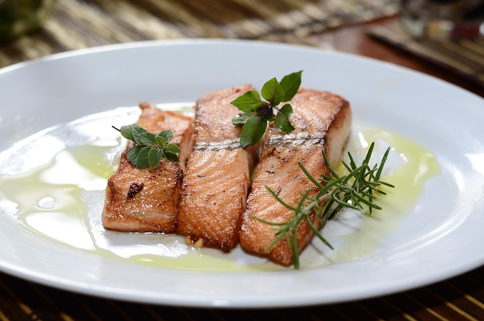

Back
Honey Garlic Salmon

Description
Just imagine it: perfectly cooked salmon fillets coated in a glossy honey garlic glaze. Every bite is bursting with flavor! The honey and garlic sauce keeps the salmon juicy, moist, and packed with deliciousness—and it's healthy, too!
This quick salmon dinner is one of the fastest meals you can make at home. From prep to plate, it's done in just 15 minutes. It's proof that you don't need anything fancy to make amazing food—sometimes, the simplest ingredients create the most incredible meals.
Ingredients
- Salmon
- Cayenne Pepper
- Black Pepper
- Parsley
- Salt
- Water
- Olive Oil
- Apple Cider Vinegar
- Garlic
- Honey
- Lemon
Steps
- Season the salmon with salt, black pepper and cayenne pepper, then set it aside for now.
- In a bowl, mix together the honey, water, apple cider vinegar (or lemon juice), and a pinch of salt. Give it a good stir until it's all combined.
- Grab an oven-safe skillet (cast iron is perfect!) and heat it up on high. Add some olive oil, then put the salmon in, skin side down, and let it cook for about a minute. Flip it over, cook the other side for another minute, then flip it back so the skin side is down again.
- Toss some garlic into the pan and let it sauté until it's just starting to brown. Pour in the honey mixture and add some lemon wedges, then let the sauce simmer down until it's sticky and glossy.
- If you want a little extra char, stick the skillet under the broiler for about a minute—that's totally optional.
- Finish it off with a sprinkle of parsley on top and serve it up right away. So good!